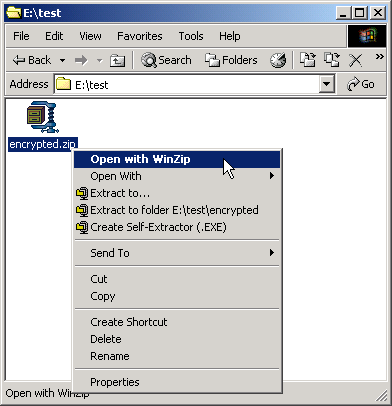
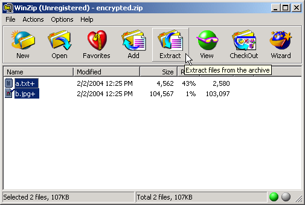
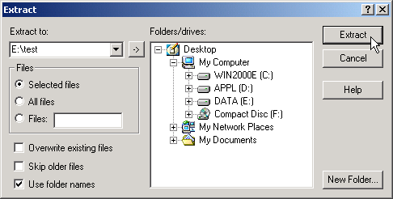
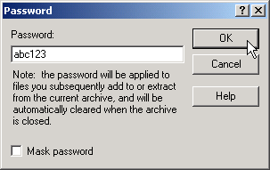
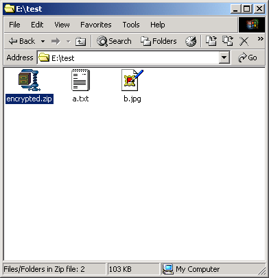
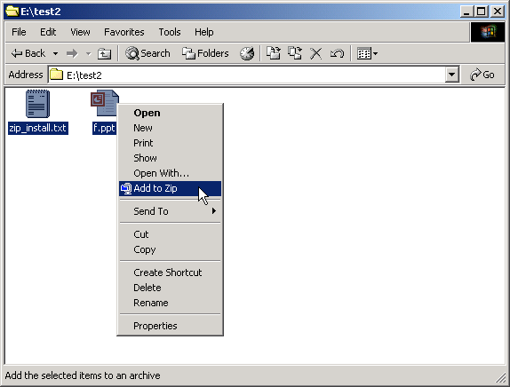
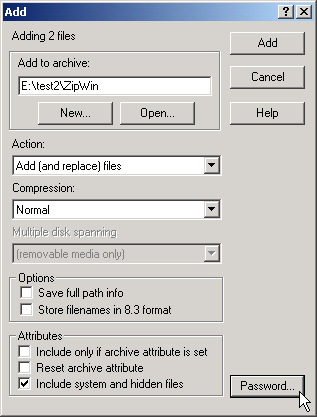
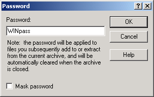
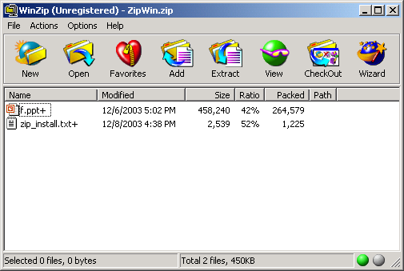

OS/400 native command interface syntax
OS/400 native command interface usage examples
Qshell interpreter interface syntax
Qshell interpreter interface usage examples
Interoperability with PC-based zip tools (with casual encryption)
Note
ZIP command interface
Zip (compress) file (ZIP) Type choices, press Enter. ZIP file name . . . . . . . . . ZIPFILE Files to add ZIP file . . . . . FILES + for more values Overwrite existing ZIP file . . REPLACE *REPLACE Compression level . . . . . . . COMPLVL *DEFAULT Additional Parameters Password for ZIP file . . . . . PASSWORD
Zip (compress) file (ZIP) - Help The ZIP command allows you to compress file(s) to standard ZIP format file. The format is compatible with PKZip 2.04g, WinZip, InfoZip and other popular ZIP utilities. Restrictions: o Multi volume ZipFile (span) is not supported. o Old compression used by old PKZip 1.x is not supported. o Wild card (*, ?) and regular expression are not supported. o This code support the "Traditional PKWARE Encryption". The new AES encryption added on Zip format by Winzip (see the page http://www.winzip.com/aes_info.htm ) and PKWare PKZip 5.x Strong Encryption is not supported. o Not all errors can be monitored. Note: Do not precede an entry with an asterisk unless that entry is a "special value" that is shown (on the display or in the help information) with an asterisk. Error messages for ZIP *ESCAPE Messages CPF9897 Command failed. ZIP file (ZIPFILE) Specifies ZIP file name. This is a required parameter. Files to add ZIP file (FILES) Specifies files to add to ZIP file. Maximum number of file is 20. This is a required parameter. You can enter multiple values for this parameter. If you are on an entry display and you need additional entry fields to enter these multiple values, type a plus sign (+) in the entry field opposite the phrase "+ for more" and press the Enter key. Replace or add file to ZIP file (REPLACE) Specifies whether to overwrite existing ZIP file. The possible values are: *REPLACE Replace (overwrite) existing ZIP file. *APPEND Add file(s) to existing ZIP file. *PROMPT Show prompt for user action. Compression level (COMPLVL) Specifies compression level. The possible values are: *DEFAULT Equivalent to level 6. 0 to 9 1 gives best speed, 9 gives best compression, 0 gives no compression at all (the input data is simply copied a block at a time. Password (PASSWORD) Specify password for the ZIP file if necessary.
UNZIP command interface
Unpack Zipped File (UNZIP) Type choices, press Enter. ZIP file name . . . . . . . . . ZIPFILE File to extract from ZIP file . FILE *ALL Extract with pathname . . . . . ADDPATH *NO Overwrite existing file . . . . REPLACE *YES Additional Parameters Password for ZIP file . . . . . PASSWORD
Unpack Zipped File (UNZIP) - Help The UNZIP command allows you to decompress file(s) from standard ZIP format file. The format is compatible with PKZip 2.04g, WinZip, InfoZip and other popular ZIP utilities. Restrictions: o Multi volume ZipFile (span) is not supported. o Old compression used by old PKZip 1.x is not supported. o Wild card (*, ?) and regular expression are not supported. o This code support the "Traditional PKWARE Encryption". The new AES encryption added on Zip format by Winzip (see the page http://www.winzip.com/aes_info.htm ) and PKWare PKZip 5.x Strong Encryption is not supported. o Not all errors can be monitored. Note: Do not precede an entry with an asterisk unless that entry is a "special value" that is shown (on the display or in the help information) with an asterisk. Error messages for UNZIP *ESCAPE Messages CPF9897 Command failed. ZIP file (ZIPFILE) Specifies ZIP file name. This is a required parameter. File to extract from ZIP file (FILE) Specifies a file to extract from ZIP file. The possible values are: *ALL Extract all files in the ZIP file. single_path_name Extract only specified file. Extract with pathname (ADDPATH) Specifies whether to use path name when ZIP file was created. The possible values are: *NO Original path is ignored. *YES Extract to original path. Replace existing file (REPLACE) Specifies whether to overwrite existing file without prompt, or show prompt to for user intervention. The possible values are: *YES Overwrite existing file without prompting. *PROMPT Show prompt for user action. Password (PASSWORD) Specify password for the ZIP file if necessary.
DSPZIP command interface
Display Zipped File (DSPZIP) Type choices, press Enter. ZIP file name . . . . . . . . . ZIPFILE
Display Zipped File (DSPZIP) - Help The DSPZIP command allows you to view contents of standard ZIP format file. The format is compatible with PKZip 2.04g, WinZip, InfoZip and other popular ZIP utilities. Sample output Length Method Size Ratio Date Time CRC-32 Name ------ ------ ---- ----- ---- ---- ------ ---- 37272 Defl:N* 6983 18% 09-27-03 13:00 296d360d /tmp/zip.c Length : uncompressed size. Method : 'Defl:N' -> normal, 'Defl:X' -> best, 'Defl:F' -> fast '*' indicates the file is encrypted. Size : compressed size. Ratio : compression ratio. Date/Time : file timestamp (MM-DD-YY HH:MM). CRC-32 : 32-bit cyclic redundancy checksum. Name : file path name. Restrictions: o Multi volume ZipFile (span) is not supported. o Old compression used by old PKZip 1.x is not supported. o Wild card (*, ?) and regular expression are not supported. Error messages for ZIP *ESCAPE Messages CPF9897 Command failed. ZIP file (ZIPFILE) Specifies ZIP file name. This is a required parameter.
ZIP/UNZIP stream files
Operation below zip/unzip stream file "/tmp/a.txt" and "/tmp/b.jpg".
> WRKLNK OBJ('/tmp/*')
Work with Object Links Directory . . . . : /tmp Type options, press Enter. 2=Edit 3=Copy 4=Remove 5=Display 7=Rename 8=Display attributes 11=Change current directory ... Opt Object link Type Attribute Text a.txt STMF b.jpg STMF brms DIR s.slapd SOCKET> ZIP ZIPFILE('/tmp/zipfile') FILES('/tmp/a.txt' '/tmp/b.jpg') Command completed. > DSPZIP ZIPFILE('/tmp/zipfile')
Length Method Size Ratio Date Time CRC-32 Name ------ ------ ---- ----- ---- ---- ------ ---- 4562 Defl:N 2568 56% 02-01-04 01:43 66d9833d /tmp/a.txt 104567 Defl:N 103085 98% 02-01-04 01:43 760a85c3 /tmp/b.jpg Press ENTER to end terminal session.> RMVLNK OBJLNK('/tmp/a.txt') Link removed. > RMVLNK OBJLNK('/tmp/b.jpg') Link removed. > WRKLNK OBJ('/tmp/*')
Work with Object Links Directory . . . . : /tmp Type options, press Enter. 2=Edit 3=Copy 4=Remove 5=Display 7=Rename 8=Display attributes 11=Change current directory ... Opt Object link Type Attribute Text brms DIR s.slapd SOCKET zipfile.zip STMF> UNZIP ZIPFILE('/tmp/zipfile') ADDPATH(*YES) Command completed. > WRKLNK OBJ('/tmp/*')
Work with Object Links Directory . . . . : /tmp Type options, press Enter. 2=Edit 3=Copy 4=Remove 5=Display 7=Rename 8=Display attributes 11=Change current directory ... Opt Object link Type Attribute Text a.txt STMF b.jpg STMF brms DIR s.slapd SOCKET zipfile.zip STMF
As all files are on the same directory, operation can be simplified by preceding "cd" (change directory) command.
> WRKLNK OBJ('/tmp/*')
Work with Object Links Directory . . . . : /tmp Type options, press Enter. 2=Edit 3=Copy 4=Remove 5=Display 7=Rename 8=Display attributes 11=Change current directory ... Opt Object link Type Attribute Text a.txt STMF b.jpg STMF brms DIR s.slapd SOCKET> CD DIR('/tmp') Current directory changed. > ZIP ZIPFILE(zipfile2) FILES(a.txt b.jpg) Command completed. > DSPZIP ZIPFILE('zipfile2')
Length Method Size Ratio Date Time CRC-32 Name ------ ------ ---- ----- ---- ---- ------ ---- 4562 Defl:N 2568 56% 02-01-04 01:43 66d9833d a.txt 104567 Defl:N 103085 98% 02-01-04 01:43 760a85c3 b.jpg Press ENTER to end terminal session.> RMVLNK OBJLNK(a.txt) Link removed. > RMVLNK OBJLNK(b.jpg) Link removed. > WRKLNK
Work with Object Links Directory . . . . : /tmp Type options, press Enter. 2=Edit 3=Copy 4=Remove 5=Display 7=Rename 8=Display attributes 11=Change current directory ... Opt Object link Type Attribute Text brms DIR s.slapd SOCKET zipfile2.zip STMF> UNZIP ZIPFILE(zipfile2) Command completed. > WRKLNK
Work with Object Links Directory . . . . : /tmp Type options, press Enter. 2=Edit 3=Copy 4=Remove 5=Display 7=Rename 8=Display attributes 11=Change current directory ... Opt Object link Type Attribute Text a.txt STMF b.jpg STMF brms DIR s.slapd SOCKET zipfile2.zip STMF
ZIP/UNZIP DB2/400 database file
* ATTENTION!
As this usage depends on POSIX stream I/O function provided by OS/400, it might not be possible to zip/unzip DB2/400 file directly on older OS/400. If it does not work, try CPYTOSTMF and CPYFRMSTMF command and zip/unzip the stream file.
Following operation compresses "QGPL/ITEM" and uncompress to "QTEMP/ITEM". It is required to use IFS path name to zip/unzip DB2/400 database file.
> ZIP ZIPFILE(/tmp/item) FILES('/qsys.lib/qgpl.lib/item.file/item.mbr') Command completed. > DSPZIP ZIPFILE(/tmp/item)
Length Method Size Ratio Date Time CRC-32 Name ------ ------ ---- ----- ---- ---- ------ ---- 23544 Defl:N 6284 26% 02-01-04 02:14 36822a17 /qsys.lib/qgpl.lib/ item.file/item.mbr Press ENTER to end terminal session.> CRTDUPOBJ OBJ(ITEM) FROMLIB(QGPL) OBJTYPE(*FILE) TOLIB(QTEMP) Object ITEM in QTEMP type *FILE created. 1 objects duplicated. > CD DIR('/qsys.lib/qtemp.lib/item.file') Current directory changed. > UNZIP ZIPFILE('/tmp/item') FILE('/qsys.lib/qgpl.lib/item.file/item.mbr') Command completed. > DSPPFM FILE(QTEMP/ITEM)
Display Physical File Member File . . . . . . : ITEM Library . . . . : QTEMP Member . . . . . : ITEM Record . . . . . : 1 Control . . . . . Column . . . . . : 1 Find . . . . . . . *...+....1....+....2....+....3....+....4....+....5....+....6....+....7....+... 01000Blank Media CDR recordable media 80min 10-pk 01010Blank Media Rewriteable Recordable CD for Digital Audio 10pc for 01020Blank Media 10-Pk Digital Video Tapes/60-Minutes Blank 01030Blank Media Blank VHS Video Cassettes: T-90 02000Batteries Digital Camera NiMH Rechargeable Battery Kit 02010Batteries APS Camera SLR Body: CR2 Long Life Lithium Battery Pa 02020Batteries AA rechargeable NiMh battery (4 pack) 02030Batteries Pack of rechargeable batteries with a charger 02040Batteries Rechargeable Ni-MH Battery Set (4 Pack With Recharger 02050Batteries Long life lithium-ion battery pack 03000Extension Cords 10' Extension Coil Cord 03010Extension Cords 100' EXTENSION CORD REEL 03020Extension Cords 6 Feet PC Power Extension Cord 04000Fax Machines Plain Paper Fax Machine 04010Fax Machines Plain Paper Fax With Digital Answer Machine More... F3=Exit F12=Cancel F19=Left F20=Right F24=More keys
ZIP/UNZIP online save file
* ATTENTION!
As this usage depends on POSIX stream I/O function provided by OS/400, it might not be possible to zip/unzip DB2/400 file directly on older OS/400. If it does not work, try CPYTOSTMF and CPYFRMSTMF command and zip/unzip the stream file.
This demonstrates the following operation:
- Save source physical file "QGPL/QCLSRC" to online save file "QGPL/SAVF"
- Compress "QGPL/SAVF" to zipped file "/tmp/savfzip.zip".
- Create online save file "QTEMP/SAVF".
- Uncompress the zipped file "/tmp/savfzip.zip" to "QTEMP/SAVF".
- Restore source physical file "QCLSRC" to library "QTEMP" from online save file "QTEMP/SAVF".
> CRTSAVF FILE(QGPL/SAVF) <- 1 File SAVF created in library QGPL. > SAVOBJ OBJ(QCLSRC) LIB(QGPL) DEV(*SAVF) SAVF(QGPL/SAVF) 1 objects saved from library QGPL. > ZIP ZIPFILE('/tmp/savfzip') FILES('/qsys.lib/qgpl.lib/savf.file') <- 2 Command completed. > DSPZIP ZIPFILE(/tmp/item)
Length Method Size Ratio Date Time CRC-32 Name ------ ------ ---- ----- ---- ---- ------ ---- 12672 Defl:N 1030 8% 02-01-04 02:55 1c2f3914 /qsys.lib/qgpl.lib/ savf.file Press ENTER to end terminal session.> CRTSAVF FILE(QTEMP/SAVF) <- 3 File SAVF created in library QTEMP. > CD DIR('/qsys.lib/qtemp.lib') Current directory changed. > UNZIP ZIPFILE('/tmp/savfzip') FILE('/qsys.lib/qgpl.lib/savf.file') <- 4 Command completed. > DSPSAVF FILE(QTEMP/SAVF)
Display Saved Objects - Save File Library saved . . . : QGPL Release level . . . : V5R2M0 ASP . . . . . . . . : 1 Data compressed . . : No Save file . . . . . : SAVF Objects displayed . : 1 Library . . . . . : QTEMP Objects saved . . . : 1 Records . . . . . . : 24 Access paths . . . . : 0 Save command . . . . : SAVOBJ Save active . . . . : *NO Save date/time . . . : 04/02/01 02:55:59 Type options, press Enter. 5=Display saved data base file members Opt Object Type Attribute Owner Size (K) Data QCLSRC *FILE PF QPGMR 4 YES F3=Exit F12=Cancel> RSTOBJ OBJ(QCLSRC) SAVLIB(QGPL) DEV(*SAVF) SAVF(QTEMP/SAVF) RSTLIB(QTEMP) <- 5 1 objects restored from QGPL to QTEMP. > WRKOBJPDM LIB(QTEMP) OBJ(QCLSRC)
Work with Objects Using PDM XXXXX Library . . . . . QTEMP Position to . . . . . . . . Position to type . . . . . Type options, press Enter. 2=Change 3=Copy 4=Delete 5=Display 7=Rename 8=Display description 9=Save 10=Restore 11=Move ... Opt Object Type Attribute Text QCLSRC *FILE PF-SRC DEFAULT SOURCE DATA BASE FILE FOR CL Bottom Parameters or command ===> F3=Exit F4=Prompt F5=Refresh F6=Create F9=Retrieve F10=Command entry F23=More options F24=More keys This is a subsetted list. +
minizip usage
Start Qshell interpreter by "QSH" or "STRQSH" command without paramter. Calling minizip without parameter shows usage.
QSH Command Entry > minizip MiniZip 1.00, demo of zLib + Zip package written by Gilles Vollant more info at http://www.winimage.com/zLibDll/unzip.html Usage : minizip [-o] [-a] [-0 to -9] [-p password] file.zip [files_to_add] -o Overwrite existing file.zip -a Append to existing file.zip -0 Store only -1 Compress faster -9 Compress better -p password $
miniunz usage
Start Qshell interpreter by "QSH" or "STRQSH" command without paramter. Calling miniunz without parameter shows usage.
QSH Command Entry > miniunz MiniUnz 1.00, demo of zLib + Unz package written by Gilles Vollant more info at http://www.winimage.com/zLibDll/unzip.html Usage : miniunz [-e] [-x] [-v] [-l] [-o] [-p password] file.zip [file_to_extr act.] -e Extract without pathname (junk paths) -x Extract with pathname -v list files -l list files -o overwrite files without prompting -p extract crypted file using password $
ZIP/UNZIP stream files
Operation below zip/unzip stream file "/tmp/a.txt" and "/tmp/b.jpg".
> QSH QSH Command Entry $ > cd /tmp $ > ls a.txt b.jpg brms s.slapd $ > minizip -e zipfile a.txt b.jpg MiniZip 1.00, demo of zLib + Zip package written by Gilles Vollant more info at http://www.winimage.com/zLibDll/unzip.html creating zipfile.zip $ > miniunz -l zipfile MiniUnz 1.00, demo of zLib + Unz package written by Gilles Vollant more info at http://www.winimage.com/zLibDll/unzip.html zipfile.zip opened Length Method Size Ratio Date Time CRC-32 Name ------ ------ ---- ----- ---- ---- ------ ---- 4562 Defl:N 2568 56% 02-01-04 11:13 66d9833d a.txt 104567 Defl:N 103085 98% 02-01-04 11:13 760a85c3 b.jpg $ > rm a.txt b.jpg $ > ls brms s.slapd zipfile.zip $ > miniunz -e zipfile MiniUnz 1.00, demo of zLib + Unz package written by Gilles Vollant more info at http://www.winimage.com/zLibDll/unzip.html zipfile.zip opened extracting: a.txt extracting: b.jpg $ > ls a.txt brms zipfile.zip b.jpg s.slapd $
Zip on OS/400 and extract on PC (DOS/Windows)
Create file "/tmp/encrypted.zip" on OS/400. Notice that "*" in the DSPZIP output indicated that the file is encrypted.
> ADDLIBLE LIB(ZLIB) POSITION(*LAST) Library ZLIB added to library list. > CD DIR('/tmp') Current directory changed. > ZIP ZIPFILE(encrypted) FILES(a.txt b.jpg) PASSWORD(abc123) <- Actually, password Command completed. is not displayed > DSPZIP ZIPFILE(encrypted)
Length Method Size Ratio Date Time CRC-32 Name ------ ------ ---- ----- ---- ---- ------ ---- 4562 Defl:N* 2580 56% 02-01-04 18:46 66d9833d a.txt 104567 Defl:N* 103097 98% 02-01-04 18:46 760a85c3 b.jpg Press ENTER to end terminal session.
Send "/tmp/encrypted.zip" to PC by using FTP (or NetServer, 5250 file transfer, iSeries Access for Web, etc).
Microsoft Windows XP [Version 5.1.2600] (C) Copyright 1985-2001 Microsoft Corp. E:\test>ftp foo.bar.com Connected to foo.bar.com. 220-QTCP AT foo. 220 CONNECTION WILL CLOSE IF IDLE MORE THAN 5 MINUTES. User (foo.bar.com:(none)): (type OS/400 user name) 331 ENTER PASSWORD. Password:(type password for OS/400 user) 230 XXX LOGGED ON. ftp> cd /tmp 250-NAMEFMT SET TO 1. 250 "/tmp" IS CURRENT DIRECTORY. ftp> bi 200 REPRESENTATION TYPE IS BINARY IMAGE. ftp> get encrypted.zip 200 PORT SUBCOMMAND REQUEST SUCCESSFUL. 150 RETRIEVING FILE /tmp/encrypted.zip 250 FILE TRANSFER COMPLETED SUCCESSFULLY. ftp: 105871 bytes received in 0.35Seconds 301.63Kbytes/sec. ftp> quit 221 QUIT SUBCOMMAND RECEIVED.
You can extract encrypted zip file by using WINZIP.





It is also possible to extract encrypted zip file in command prompt by using PKZIP.
E:\test>dir /X Volume in drive E is DATA Volume Serial Number is 7B1B-38DE Directory of E:\test 2004/02/01 18:54 <DIR> . 2004/02/01 18:54 <DIR> .. 2004/02/01 19:16 105,871 ENCRYP~1.ZIP encrypted.zip 1 File(s) 105,871 bytes 2 Dir(s) 4,957,405,184 bytes free E:\test>pkzip -v encryp~1 <- PKZIP can handle 8.3 filename PKZIP (R) FAST! Create/Update Utility Version 2.04g 02-01-93 Copr. 1989-1993 PKWARE Inc. All Rights Reserved. Shareware Version PKZIP Reg. U.S. Pat. and Tm. Off. Patent No. 5,051,745 . 80486 CPU detected. . XMS version 2.00 detected. . DPMI version 0.90 detected. Searching ZIP: ENCRYP~1.ZIP Length Method Size Ratio Date Time CRC-32 Attr Name ------ ------ ----- ----- ---- ---- -------- ---- ---- 4562 DeflatN 2580 44% 04-02-01 18:46 66d9833d --w-* a.txt 104567 DeflatN 103097 2% 04-02-01 18:46 760a85c3 --w-* b.jpg ------ ------ --- ------- 109129 105677 4% 2 E:\test>pkunzip -e encryp~1 <- fails because no password specified ~~~~~~~~~~~~~~~~~~~~~~~~~~~~ SNIP ~~~~~~~~~~~~~~~~~~~~~~~~~~~~ Searching ZIP: ENCRYP~1.ZIP PKUNZIP: (W12) Warning! Skipping encrypted file: a.txt PKUNZIP: (W12) Warning! Skipping encrypted file: b.jpg PKUNZIP: (E11) No file(s) found. E:\test>pkunzip -e -sabc123 encryp~1 ~~~~~~~~~~~~~~~~~~~~~~~~~~~~ SNIP ~~~~~~~~~~~~~~~~~~~~~~~~~~~~ Searching ZIP: ENCRYP~1.ZIP Inflating: a.txt Inflating: b.jpg E:\test>dir Volume in drive E is DATA Volume Serial Number is 7B1B-38DE Directory of E:\test 2004/02/01 18:54 <DIR> . 2004/02/01 18:54 <DIR> .. 2004/02/01 19:16 105,871 encrypted.zip 2004/02/01 18:46 4,562 A.TXT 2004/02/01 18:46 104,567 B.JPG 3 File(s) 215,000 bytes 2 Dir(s) 4,957,265,920 bytes free
Zip on PC (DOS/Windows) and extract on OS/400
Create file "zippk.zip" by PKZIP on PC from DOS or command prompt of Windows.
E:\test>dir /x Volume in drive E is DATA Volume Serial Number is 7B1B-38DE Directory of E:\test 2004/02/01 18:54 <DIR> . 2004/02/01 18:54 <DIR> .. 2001/02/12 18:59 11,616 c.tif 2000/03/20 18:59 10,371 D1BA3~1.HTM d.html 2 File(s) 21,987 bytes 2 Dir(s) 4,957,454,336 bytes free E:\test>pkzip -a -sDOSpass zippk c.tif D1BA3~1.HTM ~~~~~~~~~~~~~~~~~~~~~~~~~~~~ SNIP ~~~~~~~~~~~~~~~~~~~~~~~~~~~~ Creating ZIP: ZIPPK.ZIP Adding: C.TIF Deflating (17%), done. Adding: D1BA3~1.HTM Deflating (61%), done. E:\test>pkzip -v zippk ~~~~~~~~~~~~~~~~~~~~~~~~~~~~ SNIP ~~~~~~~~~~~~~~~~~~~~~~~~~~~~ Searching ZIP: ZIPPK.ZIP Length Method Size Ratio Date Time CRC-32 Attr Name ------ ------ ----- ----- ---- ---- -------- ---- ---- 11616 DeflatN 9708 17% 01-02-12 18:59 31e6a52e --w-* C.TIF 10371 DeflatN 4097 61% 00-03-20 18:59 fb04cf09 --w-* D1BA3~1.HTM ------ ------ --- ------- 21987 13805 38% 2
Create file "ZipWin.zip" by WinZip (version 8.0 j (3106)) on Windows.




Transfer the two zip files to directory "/tmp" on OS/400.
Unzip the files on OS/400.
> CD DIR('/tmp') Current directory changed. > WRKLNK
Work with Object Links Directory . . . . : /tmp Type options, press Enter. 2=Edit 3=Copy 4=Remove 5=Display 7=Rename 8=Display attributes 11=Change current directory ... Opt Object link Type Attribute Text brms DIR s.slapd SOCKET ZipWin.zip STMF ZIPPK.ZIP STMF> UNZIP ZIPFILE(zipwin) PASSWORD(winpass) <- Password is case sensitive zipwin.zip opened. <- See low-level message for error extracting: f.ppt. error -3 with zipfile in unzReadCurrentFile. Command failed. See low-level message for detail. > UNZIP ZIPFILE(zipwin) PASSWORD(WINpass) zipwin.zip opened. extracting: f.ppt. extracting: zip_install.txt. Command completed. > UNZIP ZIPFILE(zippk) PASSWORD(dospass) <- Password is case sensitive zippk.zip opened. extracting: C.TIF. error -3 with zipfile in unzReadCurrentFile. Command failed. See low-level message for detail. > UNZIP ZIPFILE(zippk) PASSWORD(DOSpass) zippk.zip opened. extracting: C.TIF. extracting: D1BA3~1.HTM. Command completed. > QSH CMD('ls -la /tmp')
Add library "zlib" to job's library list.
The encryption method, "Traditional PKWARE Encryption", used in this package can be deciphered by common cracking tools. If you need more robust encryption, you should not use this package. PKWare's "PKZip 5.x Strong Encryption" and WinZip's "AES Encryption" are not supported.
DBCS restrictions
DBCS file name is _not_ supported.
In interactive session, lowercase English characters become SBCS katakana. In this case, using CHGJOB command to change job ccsid to 65536, or change "Character identifier control" (CHRIDCTL) paramter to *DEVD.
If you use these programs in Japanese environment, you should change job CCSID to 5035, or lower case English characters may become gabage. Also set 5250 emulator codepage to 939 (Japanese English lower-case extended). Still you see invalid katakana characters instead of '[' and ']' in some messages.
[Home]